📖
التربة
الفصل السادس: موارد الأرض والحفاظ عليها · الصفحات ١٦٦ – ١٧٣
❓ السؤال الأساسيممَّ تتكوّن التربة؟ وكيف نحافظ عليها؟
💡 الزبدة⚖️ انتبهي للفرق🔍 توضيح⚠️ فخ في الاختبار✍️ حلّ سؤال الكتاب
في كل بطاقة فكرة واحدة: اقرئي فقرة الكتاب ثم حاشيتها، ثم اسحبي إلى البطاقة التالية 👈
أنظر وأتساءل
هذه النباتات حديثة النمو. تنمو النباتات بشكل جيد في بعض أنواع التربة، لكنها لا تنمو في أنواع أخرى من التربة. ما المواد الموجودة في التربة التي تساعد النبات على النمو؟
✍️ الجوابفكّري ثم اضغطي
الدبال: يحوي مواد مغذية للنبات، ويمتص الماء ويحتفظ به أكثر من الفتات الصخري.
📝 مفردات الدرس
التربةخليط من فتات الصخور وأجزاء نباتات ومخلوقات ميتة.
نطاق التربةكل طبقة من طبقات التربة.
الدبالجزء من التربة يتكون من المواد العضوية المتحللة، وهي بقايا النباتات والحيوانات الميتة التي حلّلتها المخلوقات المجهرية.
التربة السطحيةالتربة في النطاق (أ)، وتنمو فيها معظم جذور النباتات.
التلوثإضافة مواد ضارة إلى التربة أو الماء أو الهواء.
حفظ التربةحماية التربة والمحافظة عليها.
ص١٦٨ · ما التربة؟
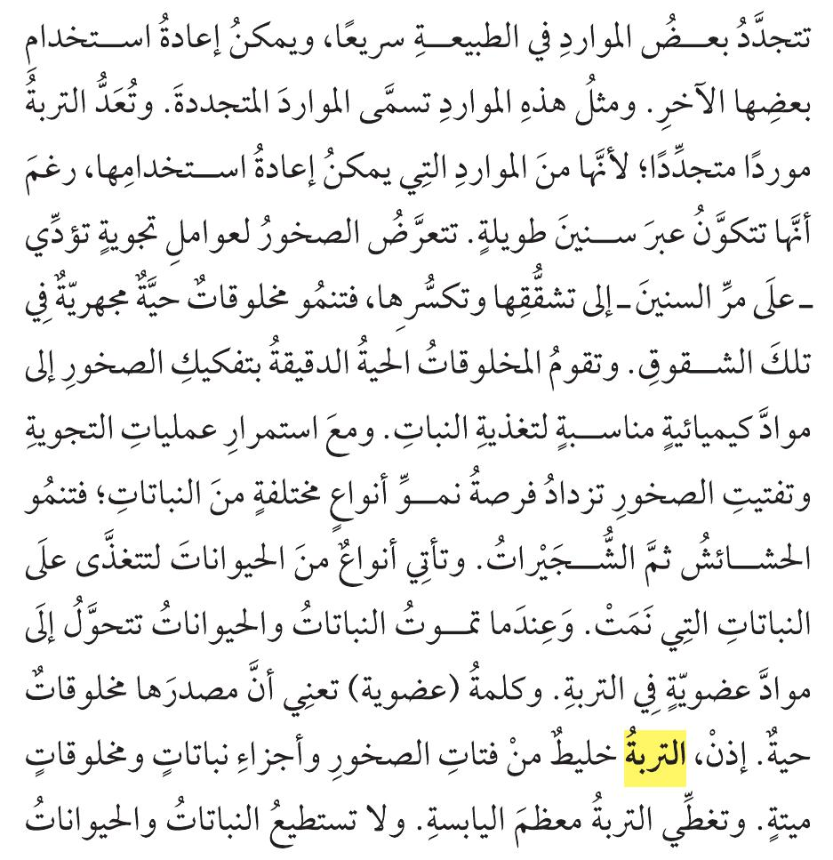
💡 الزبدة
تعدّ التربة موردًا متجددًا؛ لأنها من الموارد التي يمكن إعادة استخدامها، رغم أنها تتكوّن عبر سنين طويلة.
🔍 كيف تتكوّن التربة؟
١- تتعرّض الصخور لعوامل تجوية تؤدي إلى تشققها وتكسّرها.
٢- تنمو مخلوقات حية مجهرية في الشقوق، وتفكك الصخور إلى مواد كيميائية مناسبة لتغذية النبات.
٣- تنمو الحشائش ثم الشجيرات، وتأتي الحيوانات لتتغذى عليها.
٤- تموت النباتات والحيوانات فتتحول إلى مواد عضوية في التربة.
٢- تنمو مخلوقات حية مجهرية في الشقوق، وتفكك الصخور إلى مواد كيميائية مناسبة لتغذية النبات.
٣- تنمو الحشائش ثم الشجيرات، وتأتي الحيوانات لتتغذى عليها.
٤- تموت النباتات والحيوانات فتتحول إلى مواد عضوية في التربة.
💡 الزبدة
التربة خليط من فتات الصخور وأجزاء نباتات ومخلوقات ميتة، ولا تستطيع النباتات والحيوانات العيش من دونها.
ص١٦٨ · ما التربة؟
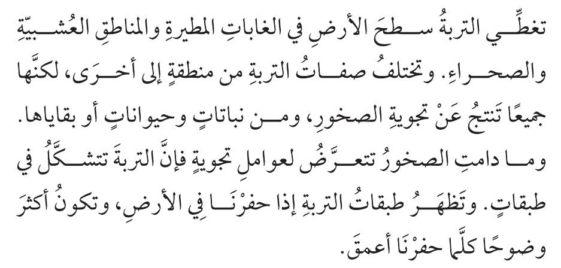
💡 الزبدة
تختلف صفات التربة من منطقة إلى أخرى (الغابات المطيرة، المناطق العشبية، الصحراء)، لكنها جميعًا تنتج عن تجوية الصخور، ومن نباتات وحيوانات أو بقاياها.
⚠️ فخ في الاختبار
كلمة (عضوية) تعني أن مصدرها مخلوقات حية.
ص١٦٩ · نطاق التربة
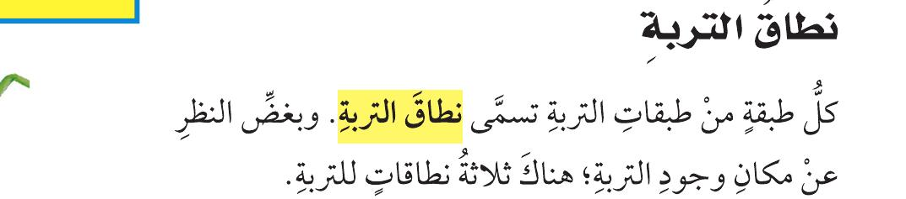
💡 الزبدة
نطاق التربة: كل طبقة من طبقات التربة. وهناك ثلاثة نطاقات بغض النظر عن مكان وجود التربة.
ص١٦٩ · نطاق التربة
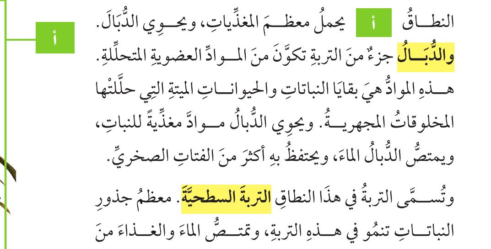
💡 النطاق (أ): التربة السطحية
يحمل معظم المغذيات، ويحوي الدبال: المواد العضوية المتحللة. والدبال يحوي مواد مغذية للنبات، ويمتص الماء ويحتفظ به أكثر من الفتات الصخري. وتنمو فيه معظم جذور النباتات.
ص١٦٩ · نطاق التربة
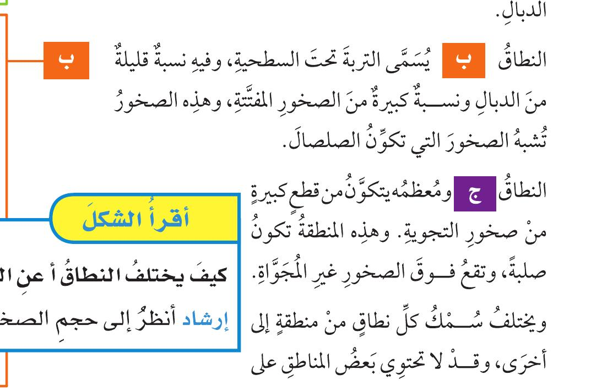
⚖️ انتبهي للفرق
(أ) التربة السطحيةمعظم المغذيات والدبال، وجذور النباتات
(ب) التربة تحت السطحيةنسبة قليلة من الدبال، ونسبة كبيرة من الصخور المفتتة
(ج)قطع كبيرة من صخور التجوية، وتقع فوق الصخور غير المجوّاة
⚠️ فخ في الاختبار
يختلف سمك كل نطاق من منطقة إلى أخرى، وقد لا تحتوي بعض المناطق على بعض هذه النطاقات.
ص١٦٩ · نطاق التربة
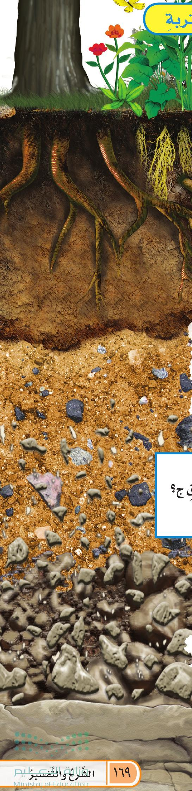
✍️ حلّ «أقرأ الشكل»اضغطي لتري الإجابة
النطاق (أ) فيه دبال وجذور نباتات وفتات صخري صغير، أما النطاق (ج) فمعظمه قطع كبيرة من صخور التجوية.
ص١٦٩ · نطاق التربة
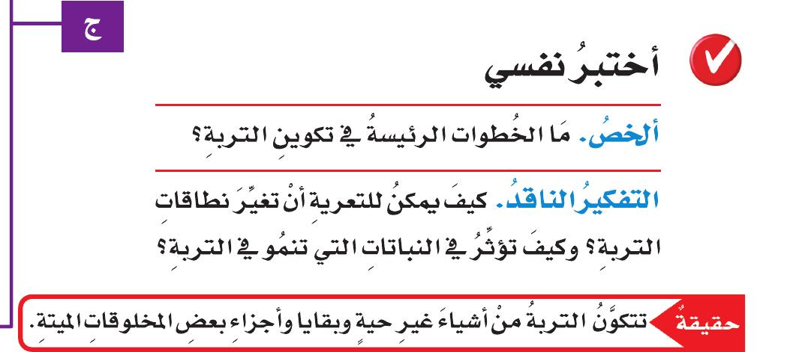
✍️ حلّ «أختبر نفسي»اضغطي لتري الإجابة
ألخص: تجوية الصخور ← نمو مخلوقات مجهرية تفككها ← نمو النباتات وتأتي الحيوانات ← موتها وتحوّلها إلى مواد عضوية.
التفكير الناقد: قد تتفتت الصخور أكثر، فيتغير سمك النطاقات، ويتغير نوع النباتات التي تنمو فيها.
التفكير الناقد: قد تتفتت الصخور أكثر، فيتغير سمك النطاقات، ويتغير نوع النباتات التي تنمو فيها.
ص١٧٠ · كيف تُستعمل التربة؟
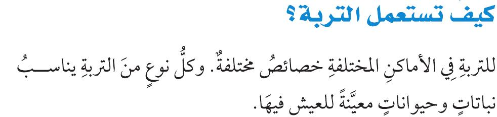
💡 الزبدة
للتربة في الأماكن المختلفة خصائص مختلفة، وكل نوع من التربة يناسب نباتات وحيوانات معينة للعيش فيها.
ص١٧٠ · كيف تُستعمل التربة؟
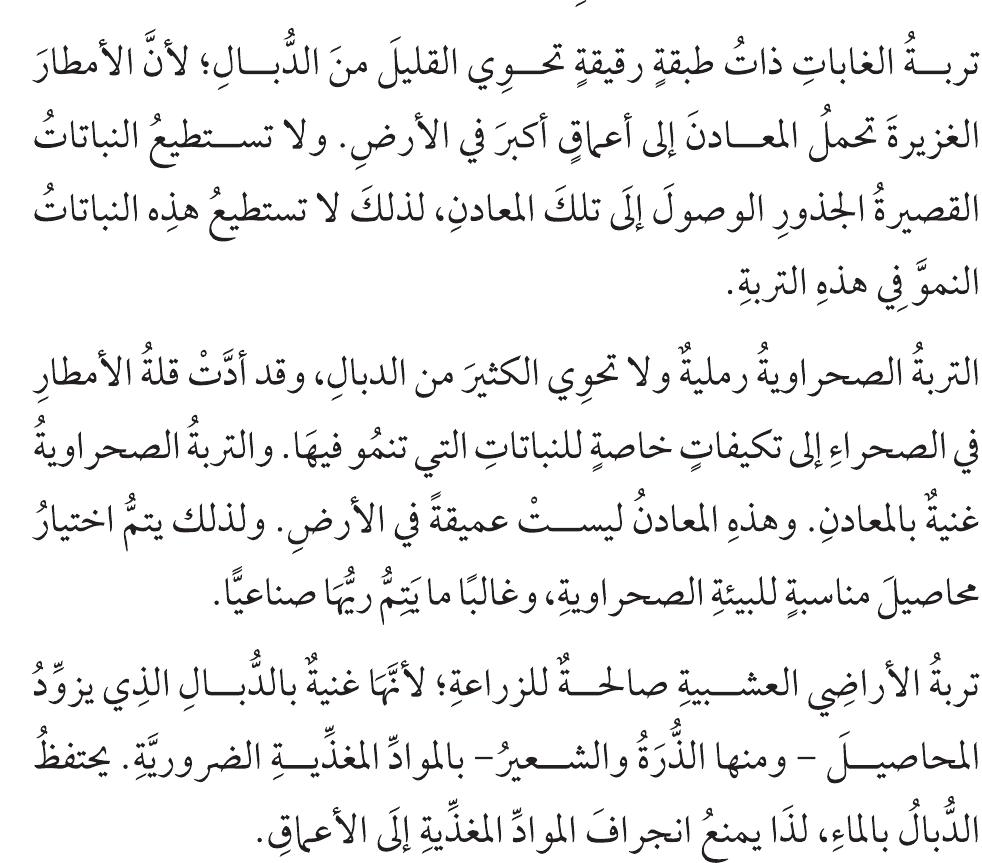
⚖️ أنواع التربة
تربة الغابات
طبقة رقيقة قليلة الدبال؛ لأن الأمطار الغزيرة تحمل المعادن إلى الأعماق
التربة الصحراوية
رملية قليلة الدبال، غنية بالمعادن، وغالبًا تُروى صناعيًا
تربة الأراضي العشبية
صالحة للزراعة؛ غنية بالدبال الذي يزود المحاصيل بالمواد المغذية
🔍 توضيح
الدبال يحتفظ بالماء، لذا يمنع انجراف المواد المغذية إلى الأعماق.
ص١٧٠ · كيف تُستعمل التربة؟
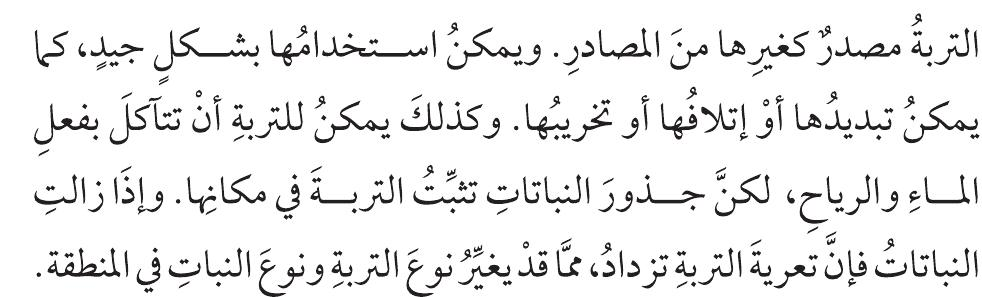
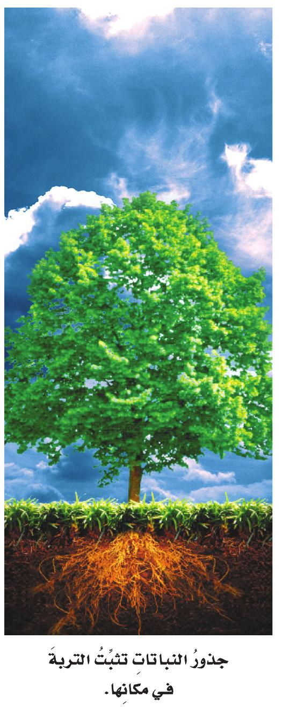
💡 الزبدة
التربة مصدر يمكن تبديده أو إتلافه أو تخريبه. وقد تتآكل بفعل الماء والرياح، لكن جذور النباتات تثبّت التربة في مكانها. وإذا أزيلت النباتات زادت تعرية التربة.
ص١٧١ · تلوث التربة
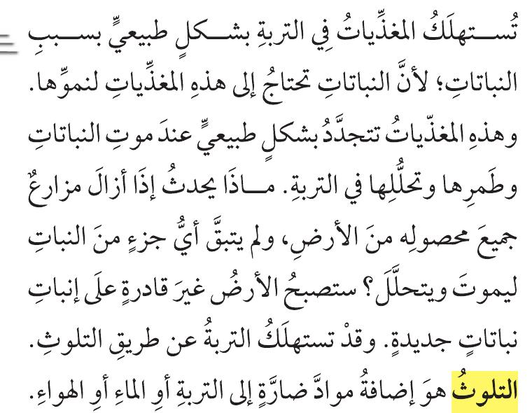
💡 الزبدة
تُستهلك المغذيات في التربة بشكل طبيعي؛ لأن النباتات تحتاج إليها لنموها، وتتجدد عند موت النباتات وطمرها وتحللها في التربة.
⚠️ فخ في الاختبار
إذا أزال مزارع جميع محصوله ولم يُبقِ أي جزء من النبات ليموت ويتحلل، تصبح الأرض غير قادرة على إنبات نباتات جديدة.
ص١٧١ · تلوث التربة
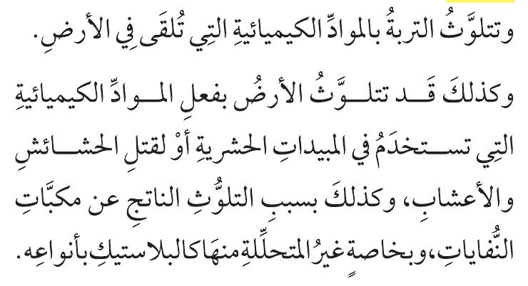
💡 الزبدة
التلوث: إضافة مواد ضارة إلى التربة أو الماء أو الهواء.
🔍 أسباب تلوث التربة في الكتاب
• المواد الكيميائية التي تُلقى في الأرض.
• المواد الكيميائية في المبيدات الحشرية أو لقتل الحشائش والأعشاب.
• مكبّات النفايات، وبخاصة غير المتحللة منها كالبلاستيك.
• المواد الكيميائية في المبيدات الحشرية أو لقتل الحشائش والأعشاب.
• مكبّات النفايات، وبخاصة غير المتحللة منها كالبلاستيك.
ص١٧١ · تلوث التربة
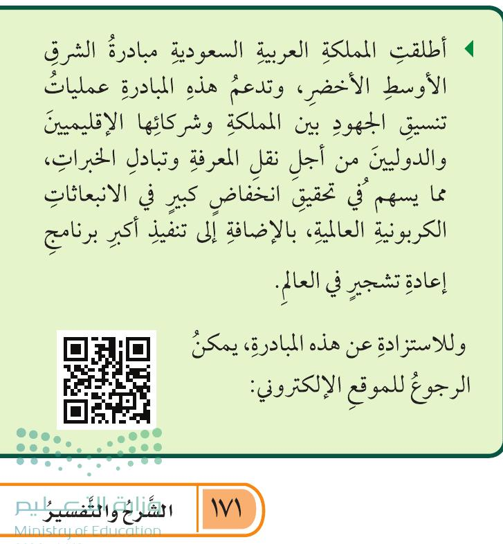
🔍 مبادرة الشرق الأوسط الأخضر
أطلقتها المملكة العربية السعودية، وتسهم في تحقيق انخفاض كبير في الانبعاثات الكربونية العالمية، إضافة إلى تنفيذ أكبر برنامج إعادة تشجير في العالم.
ص١٧١ · تلوث التربة
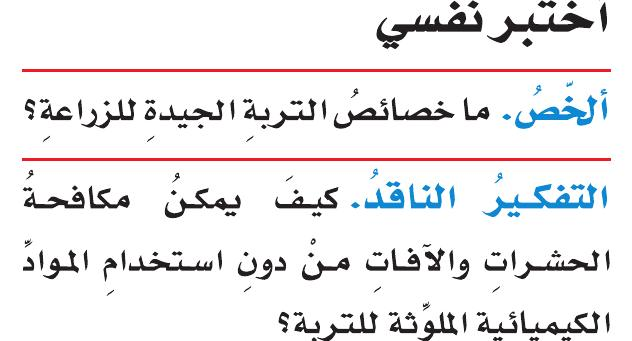
✍️ حلّ «أختبر نفسي»اضغطي لتري الإجابة
ألخص: غنية بالدبال الذي يزود المحاصيل بالمواد المغذية، ويحتفظ بالماء.
التفكير الناقد: بإبقاء جزء من النباتات في التربة، واستخدام الطرق التي تحفظها دون مواد كيميائية ملوثة.
التفكير الناقد: بإبقاء جزء من النباتات في التربة، واستخدام الطرق التي تحفظها دون مواد كيميائية ملوثة.
ص١٧٢ · كيف تتم المحافظة على التربة؟
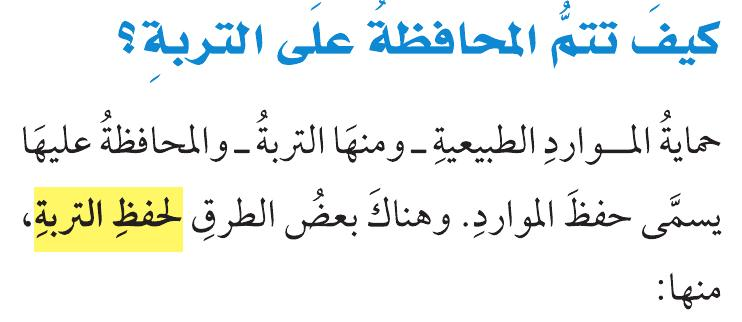
💡 الزبدة
حفظ الموارد: حماية الموارد الطبيعية، ومنها التربة، والمحافظة عليها. ومن طرق حفظ التربة:
ص١٧٢ · كيف تتم المحافظة على التربة؟
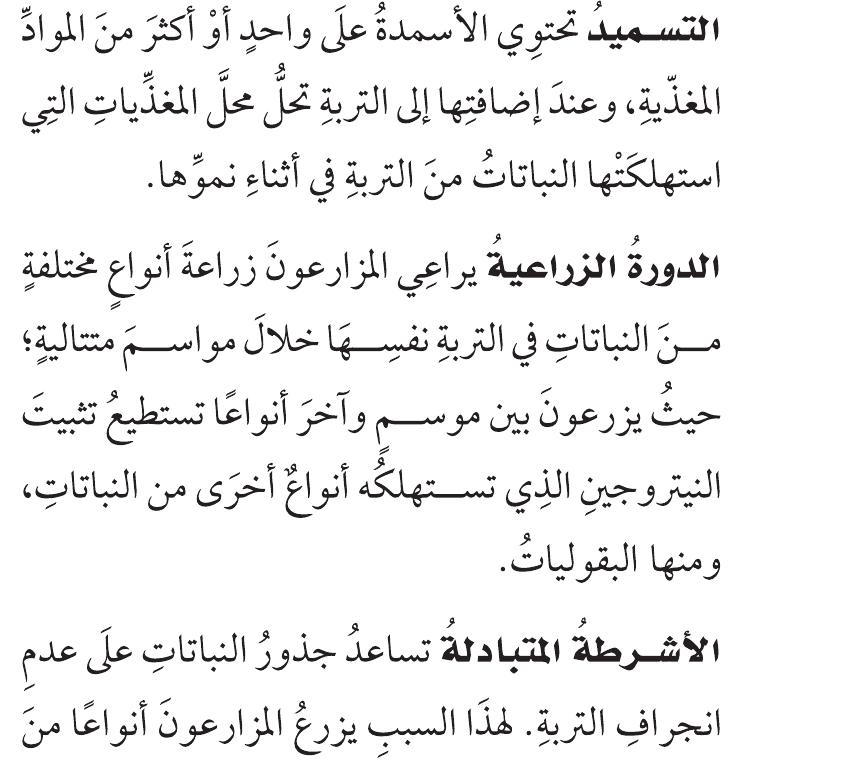
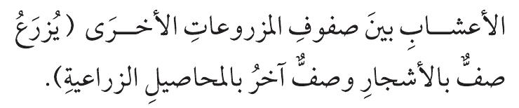
⚖️ طرق الزراعة لحفظ التربة
التسميدالأسمدة تحل محل المغذيات التي استهلكتها النباتات
الدورة الزراعيةزراعة أنواع مختلفة في مواسم متتالية، منها البقوليات التي تثبّت النيتروجين
الأشرطة المتبادلةصف أشجار وصف محاصيل؛ لأن الجذور تمنع انجراف التربة
ص١٧٢ · كيف تتم المحافظة على التربة؟
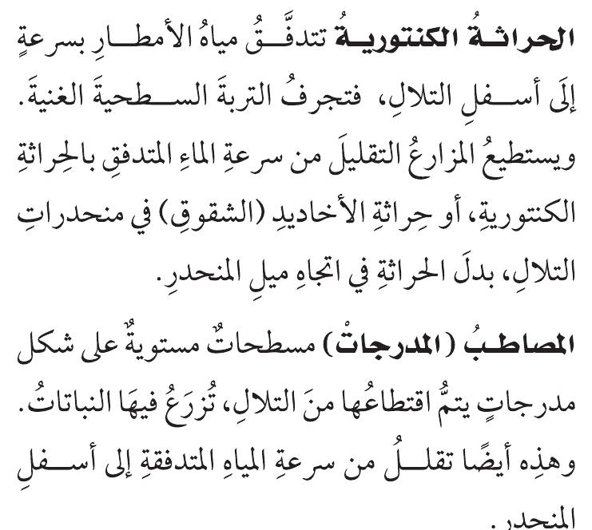
⚖️ طرق تقلل سرعة الماء والرياح
الحراثة الكنتوريةحراثة الأخاديد في اتجاه ميل المنحدر بدلًا من حراثة المنحدر
المصاطب (المدرجات)مسطحات مستوية مقتطعة من التلال على شكل مدرجات
مصدّات الرياحأشجار طويلة على حدود المزرعة
ص١٧٢ · كيف تتم المحافظة على التربة؟
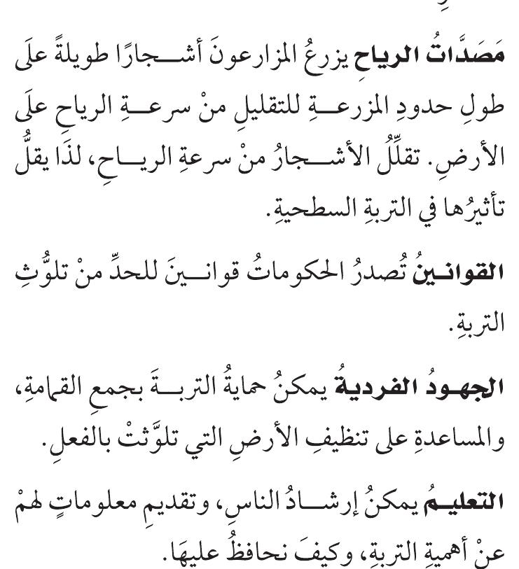
💡 طرق أخرى
• القوانين: تصدرها الحكومات للحد من تلوث التربة.
• الجهود الفردية: جمع القمامة، وتنظيف الأرض الملوثة.
• التعليم: إرشاد الناس إلى أهمية التربة وكيفية المحافظة عليها.
• الجهود الفردية: جمع القمامة، وتنظيف الأرض الملوثة.
• التعليم: إرشاد الناس إلى أهمية التربة وكيفية المحافظة عليها.
ص١٧٢ · كيف تتم المحافظة على التربة؟
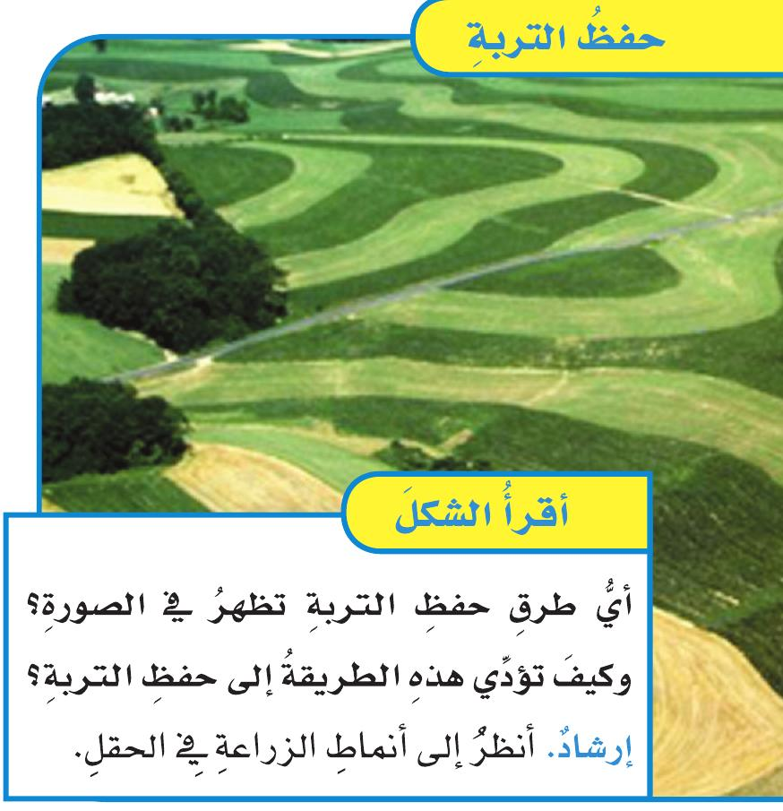
✍️ حلّ «أقرأ الشكل»اضغطي لتري الإجابة
طريقة الأشرطة المتبادلة؛ تساعد جذور النباتات على عدم انجراف التربة.
ص١٧٢ · كيف تتم المحافظة على التربة؟
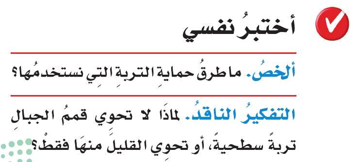
✍️ حلّ «أختبر نفسي»اضغطي لتري الإجابة
ألخص: التسميد، والدورة الزراعية، والأشرطة المتبادلة، والحراثة الكنتورية، والمصاطب، ومصدّات الرياح، والقوانين، والجهود الفردية، والتعليم.
التفكير الناقد: لأن الماء والرياح تجرف التربة من القمم بسرعة، ولا تنمو فيها نباتات كثيرة تثبّتها.
التفكير الناقد: لأن الماء والرياح تجرف التربة من القمم بسرعة، ولا تنمو فيها نباتات كثيرة تثبّتها.
📌 الخلاصة · خريطة المفاهيم
🪨 الصخورتتعرض لعوامل التجوية
⬇تنمو في شقوقها
🦠 المخلوقات المجهريةتفكك الصخور
⬇ثم
🌱 النباتات والحيواناتتموت فتتحول إلى مواد عضوية
⬇فتتكوّن
🟤 التربةفتات صخور + مواد عضوية (الدبال)
نطاقات التربة
- (أ) التربة السطحية: الدبال
- (ب) تحت السطحية: صخور مفتتة
- (ج) قطع كبيرة من الصخور
حفظ التربة
- التسميد والدورة الزراعية
- الأشرطة المتبادلة
- الحراثة الكنتورية والمصاطب
- مصدّات الرياح
📌 الخلاصة · لا تخلطي بينها
التربة السطحية (أ)
الدبالكثير
الصخورفتات صغير
جذور النباتاتمعظمها هنا
التربة تحت السطحية (ب)
الدبالقليل
الصخورصخور مفتتة كثيرة
جذور النباتاتأقل
📌 الخلاصة · لا تخلطي بينها
تربة الغابات
الدبالقليل
للزراعةغير مناسبة للنباتات القصيرة الجذور
التربة الصحراوية
الدبالقليل
للزراعةتحتاج إلى ري صناعي
تربة الأراضي العشبية
الدبالغنية به
للزراعةصالحة للزراعة
📌 الخلاصة · أهم النقاط
- التربة خليط من فتات الصخور وأجزاء نباتات ومخلوقات ميتة، وهي مورد متجدد.
- تتكون التربة بتجوية الصخور، ثم تفكيكها بالمخلوقات المجهرية، ثم تحلل النباتات والحيوانات.
- لها ثلاثة نطاقات: (أ) التربة السطحية وفيها الدبال، و(ب) تحت السطحية، و(ج) صخور كبيرة.
- تختلف أنواع التربة، وأصلحها للزراعة تربة الأراضي العشبية الغنية بالدبال.
- التلوث يضر التربة، ومن طرق حفظها: التسميد، والدورة الزراعية، والحراثة الكنتورية، والمصاطب، ومصدات الرياح.
🧠 اختبري نفسك · ١ من ٤
في أي نطاق يوجد معظم الدبال؟
✅ الجوابفكّري ثم اضغطي
في النطاق (أ): التربة السطحية.
🧠 اختبري نفسك · ٢ من ٤
لماذا تعد تربة الأراضي العشبية صالحة للزراعة؟
✅ الجوابفكّري ثم اضغطي
لأنها غنية بالدبال الذي يزود المحاصيل بالمواد المغذية.
🧠 اختبري نفسك · ٣ من ٤
ما الطريقة التي تُزرع فيها أنواع مختلفة من النباتات في التربة نفسها خلال مواسم متتالية؟
✅ الجوابفكّري ثم اضغطي
الدورة الزراعية.
🧠 اختبري نفسك · ٤ من ٤
ما الذي يثبّت التربة في مكانها ويمنع تعريتها؟
✅ الجوابفكّري ثم اضغطي
جذور النباتات.
🌟
أحسنتِ!
أنهيتِ الدرس. ثبّتي ما تعلمتِه باللعب.
🎮 العبي ألعاب الدرس في «نجمات العلوم»🖨️ نسخة الطباعة A5 📚 دروس الكتاب